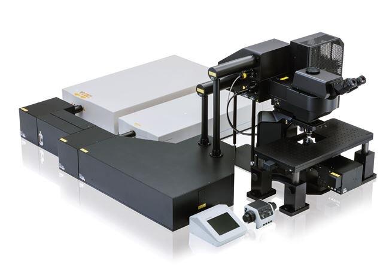
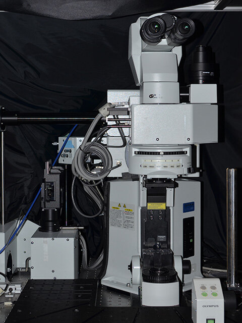
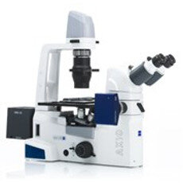
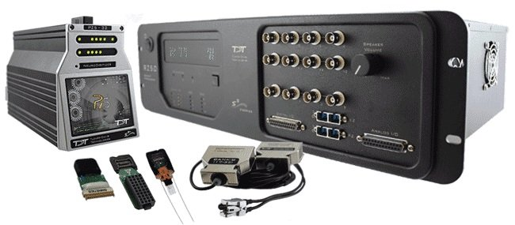
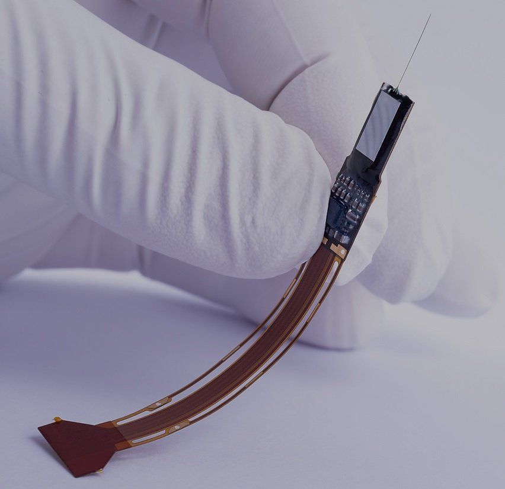
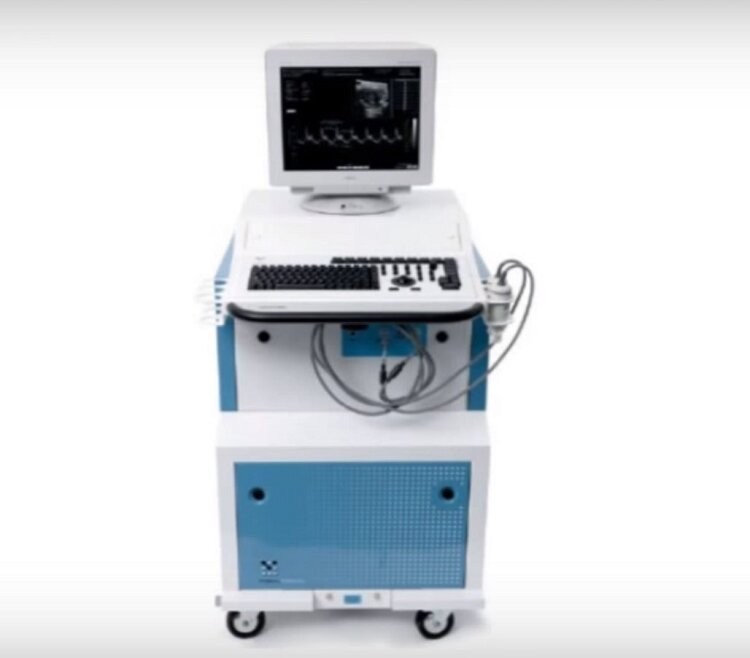
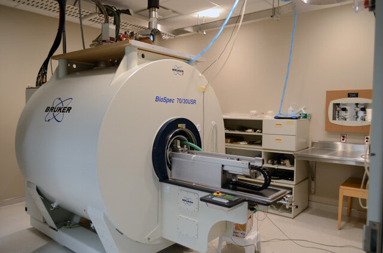
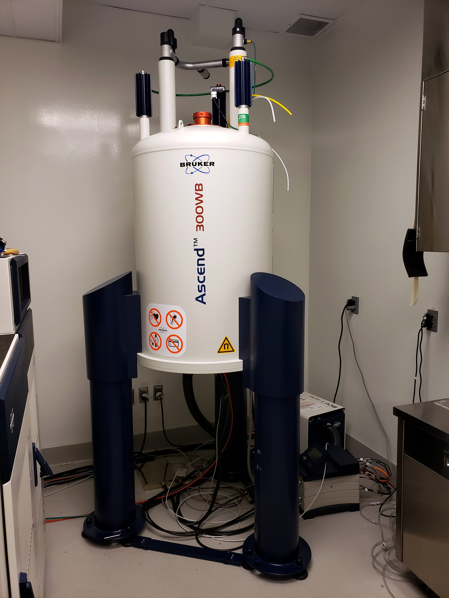

Installations de recherche
Capacités d'imagerie de pointe dans l'un des plus grands centres d'imagerie au Canada.
Installation de microscopie
Nous générons des images époustouflantes de structures à l'échelle du micromètre dans le corps — neurones, vaisseaux, cellules gliales, cellules musculaires et autres. Notre intérêt est principalement motivé par notre dévouement à comprendre comment la dysfonction pathologique se manifeste et comment elle peut être traitée efficacement. Nous sommes enthousiastes à l'idée de collaborer pour révolutionner l'avenir des soins de santé.
Accès aux installations et exigences de formation
Please contact Adrienne Dorr (adorr@sri.utoronto.ca) to arrange training. The following conditions must be met to gain access to the facility:
- Microscope Facility training successfully completed (Contact: Adrienne Dorr, primary contact).
- S646 SOP orientation completed (Contact: Adrienne Dorr).
- Passing grade on the Multiphoton Microscope User Guide Quiz (Download user guide and quiz below, complete, and submit to Adrienne Dorr).
- Microscopy Facility Imaging Protocol form completed and submitted to Adrienne Dorr.
- Cost centre approval submitted to Margaret Koletar for billing.
- Comparative Research training and AUP approval, if applicable (Contact Kate Molnarova).
Systèmes de microscopie et d'électrophysiologie

Olympus FVMPE-RS Multiphoton Microscope
Allows high-speed resonant scanning (up to 30 frames/sec for 512x512 full field) with near-infrared transmission for deep brain imaging. Light is sourced from two Titanium:sapphire lasers (MaiTai and Insight models) for concurrent deep red imaging (680-1300nm) and photostimulation. Equipped with visible light stimulation (458 and 552nm), sequential scan management, and external triggers.

Olympus FV1000MPE Multiphoton Microscope
Upright system equipped with an IR Mai Tai HP Titanium Sapphire DeepSee tunable laser (690–1040 nm) for multiphoton imaging, alongside visible laser lines (405, 440, 488, 514, 561, 635 nm) for confocal imaging. Emitted fluorescence is collected via four external PMTs. Ideal for Z-stack 3D imaging and time series (up to 16 frames/sec).

Zeiss Axiovert 200M Inverted Microscope
Inverted fluorescence microscope with brightfield capability. Suitable for multi-channel fluorescence imaging of fixed samples, basic live-cell fluorescence imaging, and transmitted light imaging.


Intracortical Electrophysiology Setup
Our lab integrates multi-modal imaging with cellular electrophysiological acquisition:
- Tucker-Davis Technologies (TDT) 32-Channel System: For extracellular recordings (LFP/spikes) with switching headstage for electrical stimulation and recording on the same electrode (<0.2 ms fast switching).
- Neuropixels 1.0 Probe: Silicon CMOS probe featuring 384 recording channels to simultaneously stream digital Action Potential and LFP signals from 960 electrodes along a 10-mm shank.
- HEKA EPC10 Double Patch Clamp Amplifier: Double USB patch clamp amplifier for dual-patch experiments with PatchMaster Next software.
- A-M Systems Model 3600 Extracellular Amplifier: Two 16-channel amplifiers with stimulating/recording capabilities for multi-electrode arrays.

VisualSonics Vevo 2100 Micro Ultrasound
Preclinical high-frequency ultrasound system producing 15 µm resolution structural descriptions of brain vasculature to a depth of 10 mm (with microbubbles). High-speed frame rates up to 1000 frames/sec produce nearly live feeds of cerebral perfusion. Portable, non-invasive, and cost-effective.
Calendriers de réservation
Google calendar links are embedded below. Users can request bookings through Margaret Koletar (mkoletar@sri.utoronto.ca) or directly edit them once facility training is completed.
IRM préclinique
Systèmes d'imagerie par résonance magnétique et de spectroscopie précliniques de pointe pour évaluer la connectivité fonctionnelle, les changements structurels et les altérations métaboliques dans les modèles de rongeurs de maladies neurologiques.

Bruker BioSpec 70/30 USR with Avance III HD
Ultra-shielded refrigerated horizontal bore 7T scanner optimized for in vivo rodent imaging.
- High-performance gradient system capable of 200mT/m of gradient amplitude with inserts for rats and mice.
- Avance III HD digital radio frequency system capable of multi-channel transmitting and receiving (up to 16 channels).
- Integrated shimming up to second order.
- Full range of RF coils suited for diverse applications (volume coils, phased-array receive-only surface coils, planar loops).

Bruker Ascend 300WB with Avance III HD
Ultra-shielded vertical wide bore 7T magnet optimized for nuclear magnetic resonance (NMR).
- Water-cooled gradient system capable of 1.5T/m @ 60A with imaging coils covering sample sizes of 5 - 25 mm.
- Integrated shimming up to fourth order.
- Range of RF coils for multiple nuclei (1H, 13C, and 31P volume coils with quadrature transmission).
Logiciels et applications
Both Bruker preclinical MR systems are equipped with ParaVision software (PV 6.0.1) which includes application packages and pulse sequences for acquisition, analysis, and visualization of fMRI, perfusion, metabolism, diffusion, and spectroscopy.
Colleen Bailey • colleen.bailey@sunnybrook.ca • ext. 89916